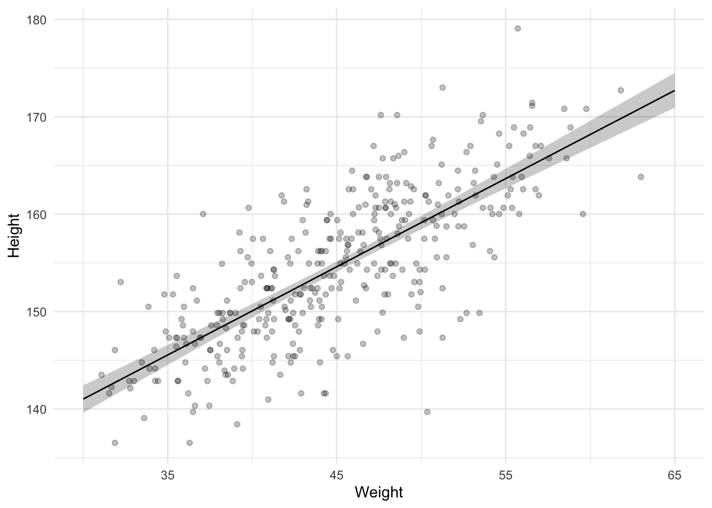

The second of a series of tutorial posts on Bayesian analyses. In this post I focus on using brms to run a regression with a single predictor.
Published
November 24, 2022
In my previous blogpost I showed how to use brms and tidybayes to run an intercept-only model. Now let’s extend that model by adding a predictor.
The data is the same as in the previous post. In addition to heights data it also contains weights data. This means we can run a model in which we regress heights onto weights, i.e., a regression with a single predictor.
If you want to follow along, run the following setup code.
Code
library(tidyverse)library(brms)library(tidybayes)library(willemverse) # remotes::install_github("willemsleegers/willemverse")data <-read_csv("Howell1.csv")data <-filter(data, age >=18)theme_set(theme_minimal())pal_2 <-brew_colors(n =2, begin = .6)
Data
Adding a predictor means the model is different, and that means Now let’s add a predictor to our model. Besides h eights, the data set also contains weights. We can create a model in which we regress heights onto weights. The formula syntax for a model like that in R is height ~ weight. We can use this formula again in get_prior() to see which priors we need to specify.
Code
get_prior(height ~ weight, data = data)
prior
class
coef
group
resp
dpar
nlpar
lb
ub
source
b
default
b
weight
default
student_t(3, 154.3, 8.5)
Intercept
default
student_t(3, 0, 8.5)
sigma
0
default
The output is a bit trickier this time. We see the Intercept and sigma priors from our previous model, as well as two extra rows referring to a class called b. These two rows actually refer to the same prior, one refers specifically to the weight predictor and one refers to all predictors. If you run a model with many more predictors, you could set one prior that applies to all predictors. In this case though, we only have 1 predictor so it actually doesn’t matter, both refer to the same prior.
Given that this is a bit trickier, and given that I said writing down your model explicitly is better, we should go ahead and do that.
\[heights_i ∼ Normal(\mu_i, \sigma)\]
\[
\mu_i = \alpha + \beta x_i
\]
We again specify that the heights are normally distributed, so we still have a \(\mu\) and \(\sigma\), but this time the \(\mu\) is no longer a parameter we will estimate. Instead, it’s constructed from other parameters, \(\alpha\), \(\beta\), and an observed variable \(x_i\) (the weight observations).
If you’re used to linear regression equations, this notation should not surprise you. \(\alpha\) refers to the intercept and \(\beta\) to the slope.
We need to set priors on these parameters. The prior for \(\alpha\) can be the same as the prior for \(\mu\) from the previous intercept-only model, if we center the data so the intercept refers to the average height of someone with an average weight, rather than someone with 0 weight (the default, which makes no sense). So let’s first mean center the weight observations.
Code
data <-mutate(data, weight_mc = weight -mean(weight))
Now we can use the same prior as before, which was a normal distribution with a mean of 170 and a standard deviation of 10 (assuming we did not update this as a result of the previous analysis).
Next is the prior for the slope. This represents the relationship between weights and heights. For every 1 increase in weight, how much do we think that the height will increase or decrease? We could begin with an agnostic prior in which we do not specify the direction and instead just add some uncertainty so the slope can go in either direction. For example, let’s put a normal distribution on the slope with a mean of 0 and a standard deviation of 10.
Finally, we have the prior for sigma (\(\sigma\)). To remind you, sigma refers to the standard deviation of the errors or the residual standard deviation. Now that we have a predictor that means the sigma can be less than what it was in the intercept-only model because some of the variance in heights might be explained by the weights, thus decreasing the size of the residuals and reducing sigma. So, if we believe in a relationship between heights and weights, we should change our prior for sigma so that it’s lower. Given that we used a prior for the slope that is agnostic (there could be a positive, negative, or no relationship), our prior for sigma could be left unchanged because it was broad enough to allow for these possibilities.
Prior predictive check
We can again create a prior predictive check to see whether our priors actually make sense. However, instead of plotting the predicted distribution of heights, we’re mostly interested in the relationship between weight and height, so we should plot a check of that relationship instead. We could simulate our own data like we did in the previous section or we can just run the Bayesian model and only draw from the prior, which we also did in the previous section.
Code
model_height_weight_prior <-brm( height ~ weight_mc, data = data, family = gaussian,prior =c(prior(normal(170, 10), class ="Intercept"),prior(cauchy(5, 5), class ="sigma"),prior(normal(0, 10), class ="b") ), sample_prior ="only",cores =4,seed =4,file ="models/model_height_weight_prior.rds")
Compiling Stan program...
Start sampling
Below we draw intercepts and slopes from the model result and plot 100 of them. To help make sense of the sensibility of the slopes I’ve added the average weight to the weights so we’re back on the normal scale and not the mean centered scale and I’ve added two dashed lines to indicate the minimum and maximum height we can expect. Note that this time we use the spread_draws() function from the tidybayes package because we want the data frame to be wide (parameters in separate columns) rather than long (each row being a draw from a parameter), in order to visualize the regression lines.
Code
draws <-spread_draws( model_height_weight_prior, b_Intercept, b_weight_mc, ndraws =100)weight_mean <- data %>%pull(weight) %>%mean()ggplot(data, aes(x = weight_mc, y = height)) +geom_blank() +geom_abline(data = draws,mapping =aes(intercept = b_Intercept, slope = b_weight_mc),alpha = .25 ) +geom_hline(yintercept =0, linetype ="dashed") +geom_hline(yintercept =272, linetype ="dashed") +geom_label(x =0, y =260, label ="Tallest person ever") +labs(x ="Weight", y ="Height") +scale_x_continuous(labels =function(x) round(x + weight_mean))
A prior predictive check of the relationship between weight and height
The plot shows a wide range of possible slopes, some of which are definitely unlikely. We should lower our uncertainty by reducing the standard deviation on the prior. In the next model I lower it to 3. Additionally, the negative slopes are all pretty unlikely because we should expect a positive relationship between weight and height (taller people tend to be heavier). We could therefore also change our prior to force it to be positive using the lb argument in our prior for b. Let’s not do this though. Let’s assume we have no idea whether the relationship will be positive or negative and instead focus on the standard deviation instead so that we don’t obtain relationships we definitely know are unlikely (e.g., if many of the lines allow for many tallest people ever or heights below zero).
Code
model_height_weight_prior_2 <-brm( height ~ weight_mc, data = data, family = gaussian,prior =c(prior(normal(170, 10), class ="Intercept"),prior(cauchy(5, 5), class ="sigma"),prior(normal(0, 3), class ="b") ), sample_prior ="only",cores =4,seed =4,file ="models/model_height_weight_prior_2.rds")
A prior predictive check of the relationship between weight and height
This looks a lot better, so let’s run the model for real now.
Code
model_height_weight <-brm(data = data, height ~ weight_mc,family = gaussian,prior =c(prior(normal(170, 10), class ="Intercept"),prior(cauchy(5, 5), class ="sigma"),prior(normal(0, 3), class ="b", lb =0) ), sample_prior =TRUE,cores =4,seed =4,file ="models/model_height_weight.rds")
Compiling Stan program...
Start sampling
Code
model_height_weight
Family: gaussian
Links: mu = identity; sigma = identity
Formula: height ~ weight_mc
Data: data (Number of observations: 352)
Draws: 4 chains, each with iter = 2000; warmup = 1000; thin = 1;
total post-warmup draws = 4000
Population-Level Effects:
Estimate Est.Error l-95% CI u-95% CI Rhat Bulk_ESS Tail_ESS
Intercept 154.60 0.27 154.07 155.13 1.00 4271 2758
weight_mc 0.91 0.04 0.82 0.99 1.00 3166 2527
Family Specific Parameters:
Estimate Est.Error l-95% CI u-95% CI Rhat Bulk_ESS Tail_ESS
sigma 5.11 0.19 4.75 5.50 1.00 4280 2706
Draws were sampled using sampling(NUTS). For each parameter, Bulk_ESS
and Tail_ESS are effective sample size measures, and Rhat is the potential
scale reduction factor on split chains (at convergence, Rhat = 1).
We see that the estimate for the weight predictor is 0.91. Let’s plot the entire posterior for the slope estimate and also compare it to the prior we set for it.
Code
results <- model_height_weight %>%gather_draws(prior_b, b_weight_mc) %>%mutate(distribution =if_else(str_detect(.variable, "prior"), "prior", "posterior" ) )ggplot(results, aes(x = .value, fill =fct_rev(distribution))) +geom_histogram(binwidth =0.05, position ="identity", alpha = .85) +xlim(0, 5) +labs(x ="Slope", y ="", fill ="Distribution")
Apparently our prior was still very uninformed because the posterior shows we can be confident in a much narrower range of slopes!
Let’s also create another plot in which we plot the model results against the observed data. In the graph below we plot the raw data as well as the regression line obtained from our model, together with a 95% CI (obtained via the median_qi() function.
Code
slopes_qi <-tibble(weight_mc =seq(from =-20, to =20, by =1) ) %>%add_epred_draws(model_height_weight) %>%median_qi()ggplot() +geom_ribbon(mapping =aes(ymin = .lower, ymax = .upper, x = weight_mc),data = slopes_qi,alpha = .25 ) +geom_line(mapping =aes(x = weight_mc, y = .epred),data = slopes_qi ) +geom_point(mapping =aes(x = weight_mc, y = height),data = data,alpha = .25 ) +labs(x ="Weight", y ="Height") +scale_x_continuous(labels =function(x) round(x + weight_mean))

This graph is great because it shows us how confident we can be in the regression line. It does omit one source of uncertainty, though. The previous plot only shows the uncertainty about the regression line (the intercept and slope). We can also make a plot with predicted values of individual heights, which also incorporates the uncertainty from the \(\sigma\) parameter.
Code
predicted_slopes_qi <-tibble(weight_mc =seq(from =-20, to =20, by =1) ) %>%add_predicted_draws(model_height_weight) %>%median_qi()ggplot() +geom_ribbon(aes(ymin = .lower, ymax = .upper, x = weight_mc),data = predicted_slopes_qi,alpha = .25 ) +geom_line(aes(x = weight_mc, y = .prediction),data = predicted_slopes_qi ) +geom_point(aes(x = weight_mc, y = height),data = data,alpha = .25 ) +labs(x ="Weight", y ="Height") +scale_x_continuous(labels =function(x) round(x + weight_mean))
Thinking correlations instead
Maybe one reason our prior was so uninformed was because it’s harder to think of the right prior for a content-specific topic such as weights and heights of the !Kung San. Maybe we can instead standardize both the heights and weights in order to turn the regression model into a simple correlation analysis. That way we can specify a prior on what we think the correlation should be, which may be easier to do because we then think in terms of whether we think the relationship is small or medium or large, or something along those lines.
The formula for our correlation analysis is height_z ~ weight_z. Which priors we have to specify remains the same, but what these priors should be changes. For instance, we know that the Intercept has to be 0 now because the heights have been standardized. This means the mean will be 0. In brms, we can specify a constant as a prior using constant().
What should the prior for \(\sigma\) be? With the variables standardized, \(\sigma\) is limited to range from 0 to 1. If the predictor explains all the variance of the outcome variable, the residuals will be 0, meaning \(\sigma\) will be 0. If the predictor explains no variance, \(\sigma\) is equal to 1 because it will be similar to the standard deviation of the outcome variable, which is 1 because we’ve standardized it. Interestingly, this also means that the prior for \(\sigma\) is now dependent on the prior for the slope, because the slope is what determines how much variance is explained in the outcome variable. So let’s think about the prior for the slope.
The prior for the slope is a bit easier now. We can specify a normal distribution with a mean of 0 and a standard deviation of 0.5, together with a lower bound of -1 and upper bound of 1. With a standard deviation of 0.5, we cover a large range of possible slopes, but assign more plausibility to smaller correlations and less plausibility to very high correlations (like 1 and -1).
As for \(\sigma\), let’s keep it simple and use a uniform prior that assign equal plausibility to each value between 0 and 1.
Code
model_height_weight_z <-brm( height_z ~ weight_z, data = data, family = gaussian,prior =c(prior(constant(0), class ="Intercept"),prior(uniform(0, 1), class ="sigma", ub =1),prior(normal(0, 0.5), class ="b", lb =-1, ub =1) ), sample_prior =TRUE,cores =4,seed =4,file ="models/model_height_weight_prior_z.rds")
Compiling Stan program...
Start sampling
Code
model_height_weight_z
Family: gaussian
Links: mu = identity; sigma = identity
Formula: height_z ~ weight_z
Data: data (Number of observations: 352)
Draws: 4 chains, each with iter = 2000; warmup = 1000; thin = 1;
total post-warmup draws = 4000
Population-Level Effects:
Estimate Est.Error l-95% CI u-95% CI Rhat Bulk_ESS Tail_ESS
Intercept -0.00 0.00 -0.00 -0.00 1.00 2171 NA
weight_z 0.75 0.03 0.68 0.82 1.00 2171 2359
Family Specific Parameters:
Estimate Est.Error l-95% CI u-95% CI Rhat Bulk_ESS Tail_ESS
sigma 0.66 0.03 0.61 0.71 1.00 3050 2239
Draws were sampled using sampling(NUTS). For each parameter, Bulk_ESS
and Tail_ESS are effective sample size measures, and Rhat is the potential
scale reduction factor on split chains (at convergence, Rhat = 1).
Taking a look at the estimates, we see the intercept is indeed 0 (we forced this). The estimate for the slope is 0.75, i.e., the correlation. This means that the estimate for sigma is the square root of 1 minus the variance of the slope estimate (0.75²). In our case, that’s .66, which matches the estimate for sigma.
Source Code
---title: "Bayesian tutorial: Single predictor regression"description: "The second of a series of tutorial posts on Bayesian analyses. In this post I focus on using `brms` to run a regression with a single predictor."date: 2022-11-24categories: - statistics - tutorial - Bayesian statistics - regressioncode-fold: truecode-tools: truetoc: truedraft: trueformat: html: df-print: kable---In my previous [blogpost](bayesian-tutorial-intercept-only.qmd) I showed how to use `brms` and `tidybayes` to run an intercept-only model. Now let's extend that model by adding a predictor. The [data](Howell1.csv) is the same as in the previous post (including the limitation that we only focus on people 18 years or older). In addition to heights data it also contains weights data. This means we can run a model in which we regress heights onto weights, i.e., a regression with a single predictor. If you want to follow along, run the following setup code.```{r}#| label: setup#| message: falselibrary(tidyverse)library(brms)library(tidybayes)library(willemverse) # remotes::install_github("willemsleegers/willemverse")data <-read_csv("Howell1.csv")data <-filter(data, age >=18)theme_set(theme_minimal())pal_2 <-brew_colors(n =2, begin = .6)```## DataAdding a predictor means the model is different, and that means Now let's add a predictor to our model. Besides heights, the data set also contains weights. We can create a model in which we regress heights onto weights. The formula syntax for a model like that in R is `height ~ weight`. We can use this formula again in `get_prior()` to see which priors we need to specify.```{r}#| label: get-priors-predictorget_prior(height ~ weight, data = data)```The output is a bit trickier this time. We see the Intercept and sigma priors from our previous model, as well as two extra rows referring to a class called `b`. These two rows actually refer to the same prior, one refers specifically to the weight predictor and one refers to all predictors. If you run a model with many more predictors, you could set one prior that applies to all predictors. In this case though, we only have 1 predictor so it actually doesn't matter, both refer to the same prior.Given that this is a bit trickier, and given that I said writing down your model explicitly is better, we should go ahead and do that.$$heights_i ∼ Normal(\mu_i, \sigma)$$$$\mu_i = \alpha + \beta x_i$$We again specify that the heights are normally distributed, so we still have a $\mu$ and $\sigma$, but this time the $\mu$ is no longer a parameter we will estimate. Instead, it's constructed from other parameters, $\alpha$, $\beta$, and an observed variable $x_i$ (the weight observations).If you're used to linear regression equations, this notation should not surprise you. $\alpha$ refers to the intercept and $\beta$ to the slope.We need to set priors on these parameters. The prior for $\alpha$ can be the same as the prior for $\mu$ from the previous intercept-only model, if we center the data so the intercept refers to the average height of someone with an average weight, rather than someone with 0 weight (the default, which makes no sense). So let's first mean center the weight observations.```{r}#| label: mean-center-weightdata <-mutate(data, weight_mc = weight -mean(weight))```Now we can use the same prior as before, which was a normal distribution with a mean of 170 and a standard deviation of 10 (assuming we did not update this as a result of the previous analysis).Next is the prior for the slope. This represents the relationship between weights and heights. For every 1 increase in weight, how much do we think that the height will increase or decrease? We could begin with an agnostic prior in which we do not specify the direction and instead just add some uncertainty so the slope can go in either direction. For example, let's put a normal distribution on the slope with a mean of 0 and a standard deviation of 10.Finally, we have the prior for sigma ($\sigma$). To remind you, sigma refers to the standard deviation of the errors or the residual standard deviation. Now that we have a predictor that means the sigma can be less than what it was in the intercept-only model because some of the variance in heights might be explained by the weights, thus decreasing the size of the residuals and reducing sigma. So, if we believe in a relationship between heights and weights, we should change our prior for sigma so that it's lower. Given that we used a prior for the slope that is agnostic (there could be a positive, negative, or no relationship), our prior for sigma could be left unchanged because it was broad enough to allow for these possibilities.### Prior predictive checkWe can again create a prior predictive check to see whether our priors actually make sense. However, instead of plotting the predicted distribution of heights, we're mostly interested in the relationship between weight and height, so we should plot a check of that relationship instead. We could simulate our own data like we did in the previous section or we can just run the Bayesian model and only draw from the prior, which we also did in the previous section.```{r}#| label: weight-prior#| fig-cap: Several priors for $\beta$model_height_weight_prior <-brm( height ~ weight_mc, data = data, family = gaussian,prior =c(prior(normal(170, 10), class ="Intercept"),prior(cauchy(5, 5), class ="sigma"),prior(normal(0, 10), class ="b") ), sample_prior ="only",cores =4,seed =4,file ="models/model_height_weight_prior.rds")```Below we draw intercepts and slopes from the model result and plot 100 of them. To help make sense of the sensibility of the slopes I've added the average weight to the weights so we're back on the normal scale and not the mean centered scale and I've added two dashed lines to indicate the minimum and maximum height we can expect. Note that this time we use the `spread_draws()` function from the `tidybayes` package because we want the data frame to be wide (parameters in separate columns) rather than long (each row being a draw from a parameter), in order to visualize the regression lines.```{r}#| label: prior-predictive-check-weight#| fig-cap: A prior predictive check of the relationship between weight and heightdraws <-spread_draws( model_height_weight_prior, b_Intercept, b_weight_mc, ndraws =100)weight_mean <- data %>%pull(weight) %>%mean()ggplot(data, aes(x = weight_mc, y = height)) +geom_blank() +geom_abline(data = draws,mapping =aes(intercept = b_Intercept, slope = b_weight_mc),alpha = .25 ) +geom_hline(yintercept =0, linetype ="dashed") +geom_hline(yintercept =272, linetype ="dashed") +geom_label(x =0, y =260, label ="Tallest person ever") +labs(x ="Weight", y ="Height") +scale_x_continuous(labels =function(x) round(x + weight_mean))```The plot shows a wide range of possible slopes, some of which are definitely unlikely. We should lower our uncertainty by reducing the standard deviation on the prior. In the next model I lower it to 3. Additionally, the negative slopes are all pretty unlikely because we should expect a positive relationship between weight and height (taller people tend to be heavier). We could therefore also change our prior to force it to be positive using the `lb` argument in our prior for `b`. Let's not do this though. Let's assume we have no idea whether the relationship will be positive or negative and instead focus on the standard deviation instead so that we don't obtain relationships we definitely know are unlikely (e.g., if many of the lines allow for many tallest people ever or heights below zero).```{r}#| label: weight-updated-priormodel_height_weight_prior_2 <-brm( height ~ weight_mc, data = data, family = gaussian,prior =c(prior(normal(170, 10), class ="Intercept"),prior(cauchy(5, 5), class ="sigma"),prior(normal(0, 3), class ="b") ), sample_prior ="only",cores =4,seed =4,file ="models/model_height_weight_prior_2.rds")```Let's inspect the lines again.```{r}#| label: prior-predictive-check-weight-update#| fig-cap: A prior predictive check of the relationship between weight and heightdraws <-spread_draws( model_height_weight_prior_2, b_Intercept, b_weight_mc, ndraws =100)ggplot(data, aes(x = weight_mc, y = height)) +geom_blank() +geom_hline(yintercept =0, linetype ="dashed") +geom_hline(yintercept =272, linetype ="dashed") +geom_abline(data = draws,mapping =aes(intercept = b_Intercept, slope = b_weight_mc),alpha = .25 ) +geom_label(x =0, y =260, label ="Tallest person ever") +labs(x ="Weight", y ="Height") +scale_x_continuous(labels =function(x) round(x + weight_mean))```This looks a lot better, so let's run the model for real now.```{r}#| label: weight-modelmodel_height_weight <-brm(data = data, height ~ weight_mc,family = gaussian,prior =c(prior(normal(170, 10), class ="Intercept"),prior(cauchy(5, 5), class ="sigma"),prior(normal(0, 3), class ="b", lb =0) ), sample_prior =TRUE,cores =4,seed =4,file ="models/model_height_weight.rds")model_height_weight```We see that the estimate for the weight predictor is `r round(fixef(model_height_weight)[2, 1], 2)`. Let's plot the entire posterior for the slope estimate and also compare it to the prior we set for it.```{r}#| label: weight-prior-posterior#| warning: falseresults <- model_height_weight %>%gather_draws(prior_b, b_weight_mc) %>%mutate(distribution =if_else(str_detect(.variable, "prior"), "prior", "posterior" ) )ggplot(results, aes(x = .value, fill =fct_rev(distribution))) +geom_histogram(binwidth =0.05, position ="identity", alpha = .85) +xlim(0, 5) +labs(x ="Slope", y ="", fill ="Distribution") ```Apparently our prior was still very uninformed because the posterior shows we can be confident in a much narrower range of slopes!Let's also create another plot in which we plot the model results against the observed data. In the graph below we plot the raw data as well as the regression line obtained from our model, together with a 95% CI (obtained via the `median_qi()` function.```{r}slopes_qi <-tibble(weight_mc =seq(from =-20, to =20, by =1) ) %>%add_epred_draws(model_height_weight) %>%median_qi()ggplot() +geom_ribbon(mapping =aes(ymin = .lower, ymax = .upper, x = weight_mc),data = slopes_qi,alpha = .25 ) +geom_line(mapping =aes(x = weight_mc, y = .epred),data = slopes_qi ) +geom_point(mapping =aes(x = weight_mc, y = height),data = data,alpha = .25 ) +labs(x ="Weight", y ="Height") +scale_x_continuous(labels =function(x) round(x + weight_mean))```This graph is great because it shows us how confident we can be in the regression line. It does omit one source of uncertainty, though. The previous plot only shows the uncertainty about the regression line (the intercept and slope). We can also make a plot with predicted values of individual heights, which also incorporates the uncertainty from the $\sigma$ parameter.```{r}predicted_slopes_qi <-tibble(weight_mc =seq(from =-20, to =20, by =1) ) %>%add_predicted_draws(model_height_weight) %>%median_qi()ggplot() +geom_ribbon(aes(ymin = .lower, ymax = .upper, x = weight_mc),data = predicted_slopes_qi,alpha = .25 ) +geom_line(aes(x = weight_mc, y = .prediction),data = predicted_slopes_qi ) +geom_point(aes(x = weight_mc, y = height),data = data,alpha = .25 ) +labs(x ="Weight", y ="Height") +scale_x_continuous(labels =function(x) round(x + weight_mean))```### Thinking correlations insteadMaybe one reason our prior was so uninformed was because it's harder to think of the right prior for a content-specific topic such as weights and heights of the !Kung San. Maybe we can instead standardize both the heights and weights in order to turn the regression model into a simple correlation analysis. That way we can specify a prior on what we think the correlation should be, which may be easier to do because we then think in terms of whether we think the relationship is small or medium or large, or something along those lines.So, let's standardize the heights and weights.```{r}#| label: standardize-heights-weightsdata <-mutate( data, height_z = (height -mean(height)) /sd(height),weight_z = (weight -mean(weight)) /sd(weight))```The formula for our correlation analysis is `height_z ~ weight_z`. Which priors we have to specify remains the same, but what these priors should be changes. For instance, we know that the Intercept has to be 0 now because the heights have been standardized. This means the mean will be 0. In `brms`, we can specify a constant as a prior using `constant()`.What should the prior for $\sigma$ be? With the variables standardized, $\sigma$ is limited to range from 0 to 1. If the predictor explains all the variance of the outcome variable, the residuals will be 0, meaning $\sigma$ will be 0. If the predictor explains no variance, $\sigma$ is equal to 1 because it will be similar to the standard deviation of the outcome variable, which is 1 because we've standardized it. Interestingly, this also means that the prior for $\sigma$ is now dependent on the prior for the slope, because the slope is what determines how much variance is explained in the outcome variable. So let's think about the prior for the slope.The prior for the slope is a bit easier now. We can specify a normal distribution with a mean of 0 and a standard deviation of 0.5, together with a lower bound of -1 and upper bound of 1. With a standard deviation of 0.5, we cover a large range of possible slopes, but assign more plausibility to smaller correlations and less plausibility to very high correlations (like 1 and -1).As for $\sigma$, let's keep it simple and use a uniform prior that assign equal plausibility to each value between 0 and 1.```{r}#| label: model-height-weight_zmodel_height_weight_z <-brm( height_z ~ weight_z, data = data, family = gaussian,prior =c(prior(constant(0), class ="Intercept"),prior(uniform(0, 1), class ="sigma", ub =1),prior(normal(0, 0.5), class ="b", lb =-1, ub =1) ), sample_prior =TRUE,cores =4,seed =4,file ="models/model_height_weight_prior_z.rds")model_height_weight_z```Taking a look at the estimates, we see the intercept is indeed 0 (we forced this). The estimate for the slope is `r round(fixef(model_height_weight_z)[2, 1], 2)`, i.e., the correlation. This means that the estimate for sigma is the square root of 1 minus the variance of the slope estimate (`r round(fixef(model_height_weight_z)[2, 1], 2)`²). In our case, that's .66, which matches the estimate for sigma.